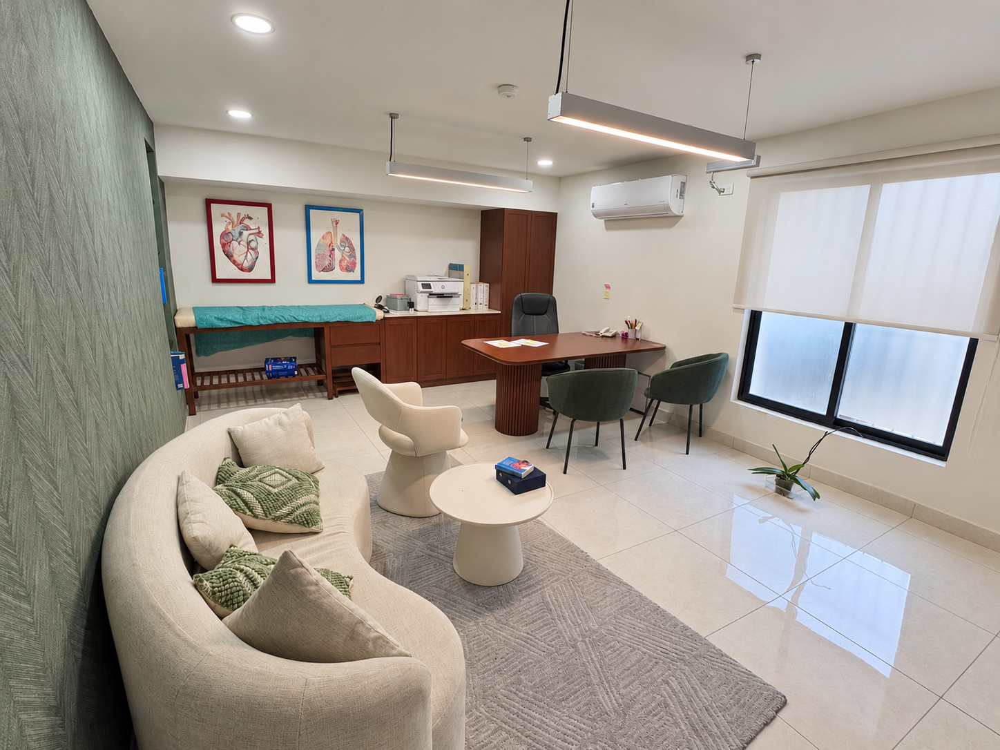
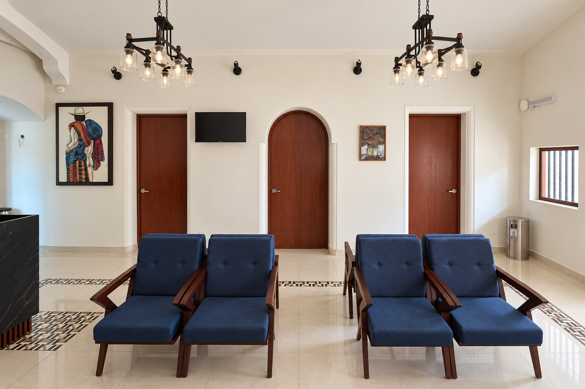
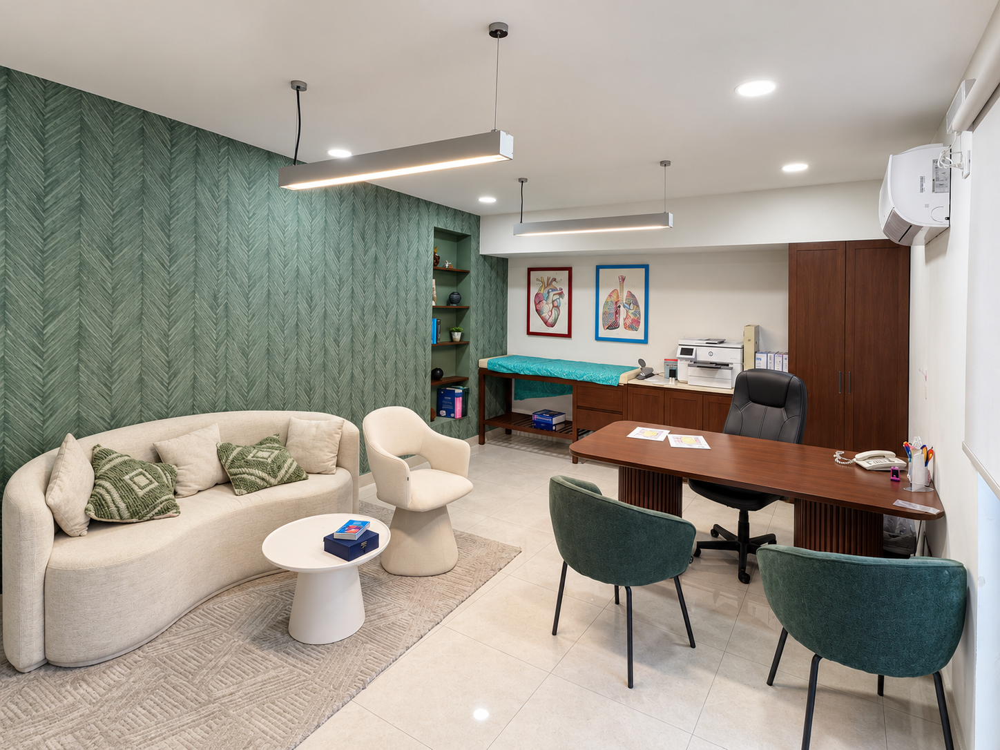
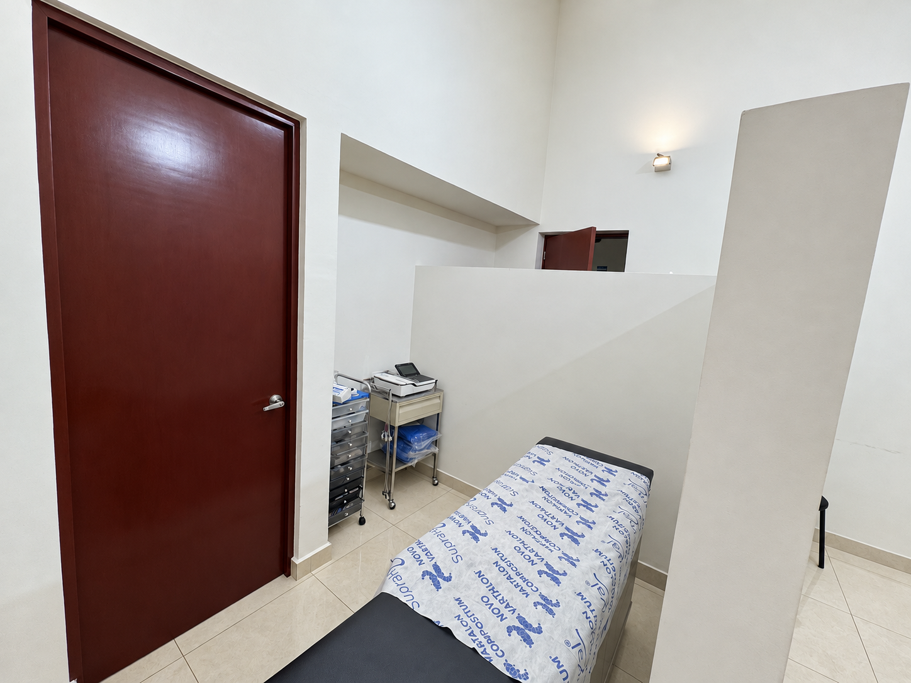
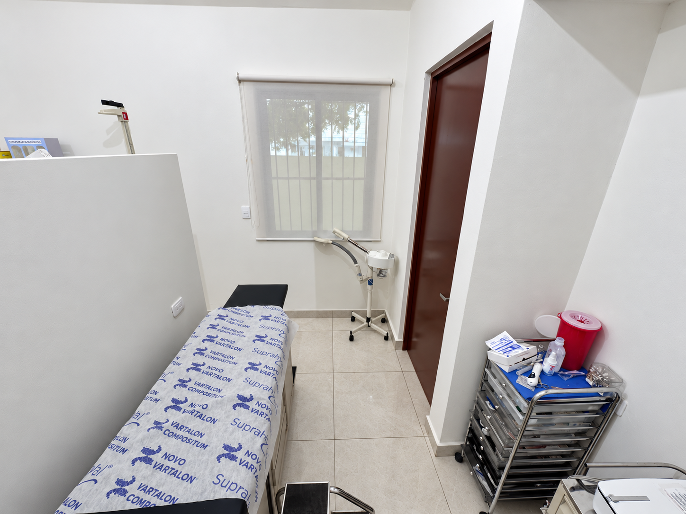
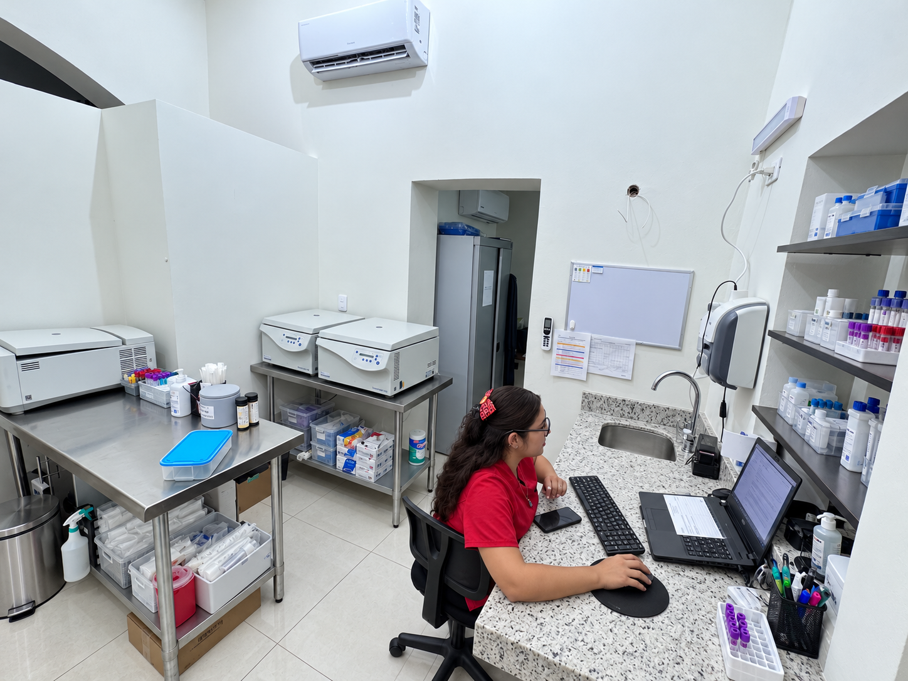
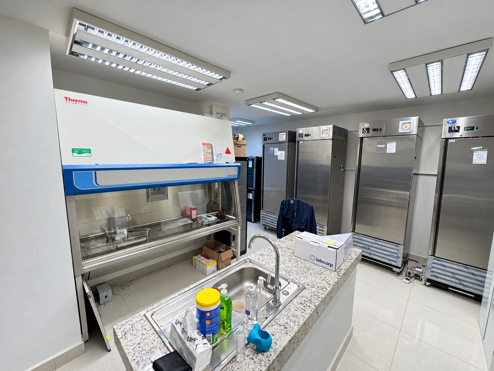
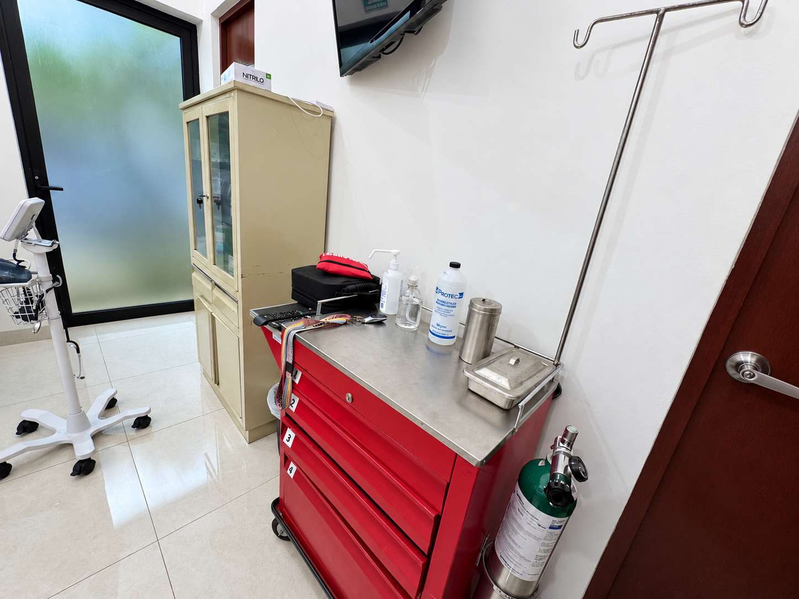

Clinical care and follow-up
Dedicated areas for participant screening, clinical assessment, protocol visits and follow-up throughout the study.
Facilities and site resources
UNAMIS provides dedicated clinical areas and operational resources to support participant safety, protocol compliance and efficient study delivery.
Site environment
UNAMIS facilities support screening and clinical assessments, protocol visits, sample collection and processing, investigational treatment administration and day-to-day study coordination.








Dedicated areas for participant screening, clinical assessment, protocol visits and follow-up throughout the study.
A controlled clinical environment for investigational interventions, observation and participant safety activities in accordance with the protocol.
Operational processes for receipt, storage, accountability and traceability of investigational product, including temperature-control requirements when applicable.
Operational readiness
UNAMIS maintains clinical and functional-assessment resources to support protocol execution. When a study requires specialized services, the site coordinates diagnostic, hospital and complementary procedure support through established local providers.
Continuity measures, environmental controls and escalation pathways support critical activities in accordance with the protocol, applicable regulations and sponsor requirements.
Sponsor and CRO collaboration